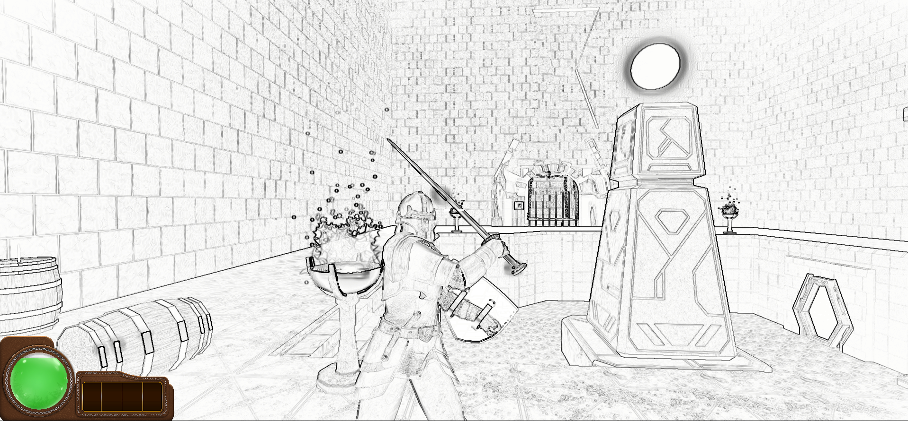
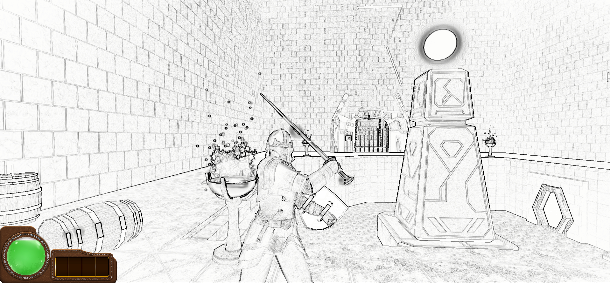

About
Arkcarmic Descent is an action-adventure game with a focus on environmental interaction, physics-based mechanics, and immersive storytelling. The game's narrative and gameplay combine intense combat with creative problem-solving.
Story:
In Arkcarmic Descent, you play as a character who awakens in a mysterious, forgotten world with a mechanical arm. As you explore this crumbling environment, you uncover secrets and unlock magical powers by collecting orbs. These abilities are linked to both the mechanical arm and a growing connection to ancient magic, hinting at a deeper, mystical world. The game is inspired by cult classics like Thief, with its emphasis on environmental storytelling, stealth, and player interaction.
Physics-based Interactions: Objects in the world can be manipulated, destroyed, or used strategically to defeat enemies. For example, ropes can be cut to drop objects, or barrels can be ignited to cause chain reactions.
Destructible Environments: Secret rooms and hidden paths can be revealed through careful manipulation of the environment. Players must think outside the box to solve environmental puzzles and find new areas.
Combat & Magic System: Players engage in multidirectional combat using a sword and shield, with an option to use their mechanical arm to perform magical actions once they unlock magical orbs. These orbs grant abilities like controlling fire or manipulating objects telekinetically.


 
